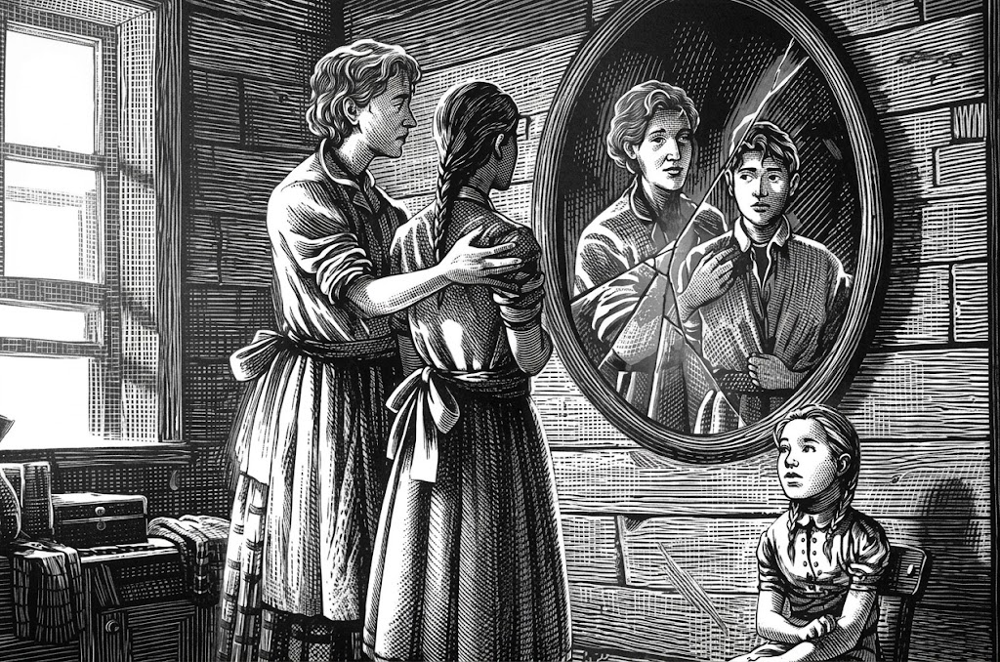

Once Upon a Page
Once Upon a Page

The Tributes

Katniss wakes up on the morning of the reaping to find that her little sister, Prim, has moved to their mother’s bed in the middle of the night. Prim’s ugly cat, Buttercup, stands guard over her while she sleeps. Katniss recalls how she tried to drown the kitten years ago, when Prim first brought him home, because she didn’t want another mouth to feed. But Prim begged, and Katniss gave in—now Katniss is glad she kept Buttercup alive for the comfort the cat offers to Prim.
Katniss rises from bed and gets dressed. She grabs her forage bag and retrieves a piece of goat cheese that Prim has left for her under a bowl, and then Katniss steps outside. Katniss’s family lives in the part of District 12 known as the Seam. It’s usually swarming with people heading to work in the morning—however, today is reaping day, and the reaping itself doesn’t take place until two, so the streets are empty.
Katniss’s home is almost at the edge of the Seam, and she heads towards the fence that surrounds District 12, separating the district from the woods outside. In theory, the fence is electrified 24/7 in order to deter predators, but because District 12 is lucky to have electricity even two to three hours a day, the fence is usually safe to touch. Katniss still listens for a telltale electric hum, however, before she crawls beneath a gap in the fence.
In the woods, Katniss retrieves a bow and a sheath of arrows from their hiding spot in a log. The weapons serve as protection from the predators in the woods, but they also allow those who know how to hunt to find food. Katniss’s father taught her how to use a bow before he died in a mining accident five years ago, when Katniss was eleven. She still has nightmares about her father’s death, however, and wakes up screaming for him to run.
Trespassing in the woods is illegal, and poaching is punishable by death, but most of the Peacekeepers turn a blind eye because they enjoy the fresh meat that comes out of hunting. More people would venture in the woods if they had proper weapons, but most have only a knife. Katniss’s father crafted her bow and arrows.
Katniss recalls that when she was younger, she would blurt out criticisms of the government, frightening her mother. As she grew older, however, Katniss learned that this would only cause more trouble, so now she avoids engaging in anything other than small talk. She even avoids discussing her opinions at home, where Prim might hear her and start repeating her words.
The only person Katniss feels that she can truly be free with is her hunting partner, Gale. Gale refers to her as Catnip because when the two first met, Katniss whispered her name so quietly that Gale had thought she said “Catnip.” Soon afterwards, a lynx had started following her, looking for handouts, and the nickname stuck.
Gale has brought a loaf of real bakery bread to share on the morning of reaping day, and he and Katniss make a meal out of the bread, goat cheese, and blackberries from surrounding bushes. They mimic Effie Trinket’s affected Capitol accent and the catchphrase of the Hunger Games: “May the odds be ever in your favor!” They joke because the alternative is to be terrified about the possibility of being chosen for the Hunger Games on reaping day.
As Katniss watches Gale, she notes that their features are so similar, they might be related. Almost everyone in the Seam has straight black hair, olive skin, and gray eyes. Katniss’s mother and Prim, however, are exceptions, with light hair and blue eyes. This is because Katniss’s mother’s parents were part of a small merchant class that catered to officials and Peacekeepers, selling healing herbs at an apothecary shop.
Katniss’s father would sometimes bring herbs that he had foraged in the woods to sell to the apothecary, and that’s how Katniss’s parents met. Katniss tries to remember that her mother must have really loved her father to leave her home to move to the Seam, but she still feels angry about the way her mother became unresponsive after the mining accident that killed Katniss’s father.
Gale prepares the food they’ve brought, and they sit back to enjoy the morning and the food, which would be a perfect combination if it weren’t for that fact that their holiday is a result of reaping day. Gale suddenly suggests that they run away to live in the woods, but quickly dismisses the idea when he remembers all their “kids.” By kids he means their younger siblings and mothers, who rely on the food Gale and Katniss bring home from their outings.
Katniss is confused by Gale’s outburst—there’s never been anything romantic between them. They met in the woods when Katniss was twelve and Gale was fourteen, and it took a long time before they trusted each other enough to start working as a team. Gale suggests that they fish at the lake and leave their poles while they gather greens and strawberries in the woods. The dinner after the reaping is supposed to be celebratory for everyone except the families of those whose children have been selected for the reaping.
By the end of the morning, Gale and Katniss have a dozen fish, a bag of greens, and a gallon of strawberries. On the way home, they swing by the Hob, the black market that operates in an abandoned warehouse in the Seam. They trade some of their fish for bread and salt, and then they bring some strawberries to the mayor, who has a special fondness for them and can afford the price. The mayor’s daughter, Madge, opens the door, dressed in an expensive white dress. Gale comments on the dress, and Madge responds that she wants to look her best in case she gets picked at the reaping, and Gale reacts poorly, scoffing at Madge’s worries.
The reaping system is unfair, biased against the poor. Technically, the lottery is random, but after the age of twelve, children can opt to have their names entered into the lottery multiple times in exchange for tesserae, which can be used to purchase more grain and oil. As a result, the children of poor families tend to have more entries in the lottery than do the children of wealthier families who can survive without tesserae. Katniss now has twenty entries in the reaping, and Gale, who has been single-handedly feeding a family of five for seven years, has forty-two entries, which is why he scoffs at Madge’s fears—she likely only has four or five entries.
Gale and Katniss split up the food they’ve gathered and head to their respective homes. When Katniss arrives at her house, she finds that her mother and Prim are already ready, with Prim wearing Katniss’s first reaping outfit, a skirt and ruffled blouse. Katniss bathes and then puts on what her mother has laid out for her, which turns out to be one of her mother’s own dresses from her past—much nicer than anything Katniss herself owns. Her mother also braids Katniss’s hair on top of her head, and when she’s finished, Katniss can barely recognize herself.
Katniss attempts to comfort Prim, who is attending her first reaping. Even though the odds are in Prim’s favor, she’s still terrified, and Katniss feels powerless to protect her as she usually does. They decide to save everything Katniss has brought home for dinner, and for lunch, the family eats rough bread made from tessera grain and drinks milk from Prim’s goat.
At one o’clock, everyone heads to the square—attendance is mandatory for the reaping. Twelve- through eighteen-year-olds are roped off, and family members stand off to the sides. Everyone focuses on the temporary stage in front of the Justice Building. It holds three chairs, a podium, and two large glass balls filled with names, one for girls and one for boys. Two of the three chairs are filled with Madge’s dad, Mayor Undersee, and Effie Trinket, District 12’s escort from the Capitol.
As the clock strikes two, the mayor steps up to the podium and begins to read about the history of Panem, the country that rose out of the ashes of what once was North America. For a while, there was peace and prosperity for Panem, which consisted of a shining Capitol and thirteen surrounding districts. Afterwards, however, the districts rebelled against the Capitol, and twelve of the districts were defeated and one obliterated. The Hunger Games serve as a yearly reminder that the districts must never rebel again.
The rules of the Hunger Games are that each of the twelve districts must provide one girl and one boy, called tributes, to participate. The twenty-four tributes will be trapped in a large outdoor arena that can hold anything from desert to rainforest while they fight to the death over a period of several weeks. The last tribute standing wins. The competition is the Capitol’s method of reminding the districts that they are completely at the Capitol’s mercy. The districts are also forced to treat the Games as a festivity. The winner receives a life of ease back home, and their district is showered with prizes, largely consisting of food.
In the past seventy-four years, District 12 has only had two victors, only one of which is still alive. As the mayor reads his name, Haymitch Abernathy drunkenly stumbles onto the stage and gives Effie an unwelcome hug. The mayor quickly wraps up his speech and introduces Effie, whose pink wig is slightly off-center after her encounter with Haymitch. Effie gives a short speech before it’s time to read the names. She begins with the girls’ names, and Katniss prays that she won’t be called. As it turns out, her name isn’t the one called—instead, it’s her sister, Prim.